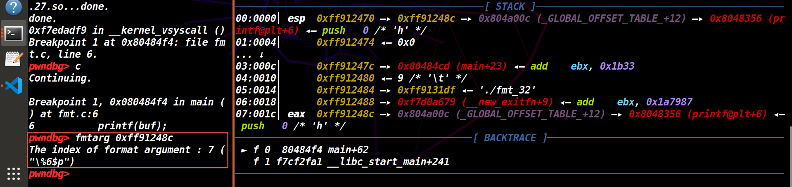
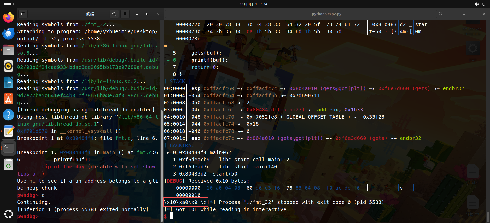

[TOC]
前文：以下是我入门PWN的记录，欢迎各位前来观看，小弟领教！
在前面的章节中，我们已经粗略的了解了栈相关的知识点： ROP、shellcode、栈转移等。
内存中还有一块区域叫做堆（heap）。
接下来的一整章的内容，我们就来讲堆。
堆章节比较抽象，我还刻意加了很多图，但依旧比栈章节要更加抽象…，以至于作者也学的迷迷糊糊，看不懂的欢迎来评论区讨论。
Linux动态内存管理机制
什么是堆？+
堆是程序用于分配动态内存的一段内存区域。 他独立的存在于内存中，介于程序内存 基地址和libc地址之间，从低地址向高地址生长，与用户打交道最多。
带你举个例子理解动态分配内存：
开一个统计表格，每人最多输入的最大内存长度是4096个字节，按照以往惯性思维去分配的话，你是不是应该每人都在之前填表时就已经分好了内存给他们了，但不是每个人都能用完这4096个字节的，有些人只输入一个字节，那就意味着就有4095个字节的内存区域被浪费，如果每个人都这样做或输入少于最大字节长度的内存的数据，是不是浪费更多？
对于这种现象的下一步应该是回收，怎么回收？
那么，有没有一种方法，能让程序根据用户所需要的内存长度大小来分配内存呢？并且不需要我们管理内存呢？有的，在libc中，我们可以通过malloc(size)来给用户分配一段长度为size的内存，通过free(ptr)来释放这段内存区域。
这些数据，被统一的存放在了堆中，维护这些数据的运行机制在glibc中，称之为ptmalloc。
堆的内存管理机制
堆是真无敌恶心….堆的管理机制相比于栈十分复杂，可以算是对我这样0基础的萌新杀手。
但是堆的漏洞比栈有更多的形式和利用方式，而且堆漏洞所需要的条件比栈更 少。 一般情况下栈溢出起码需要16个字节，也就是至少溢出到返回地址才能利用，但是堆的话只需要一个字节就可完成利用，甚至这个字节可以是个\x00,也就是空字节，nullbyte。
栈的话基本都会关闭一两个保护机制，堆的话一般全开。
CTFpwn的主流是堆利用。
堆块介绍
chunk
在了解ptmalloc的内存管理机制前，我们先了解一下堆块在内存中的存储形式。在内存中，堆是以一个个堆块构成的,这些堆块称之为chunk。
在64位系统中，堆块的大小是8字节对齐的,也就是说，我们申请一个15字节长度的堆块，实际到我们手中的用户可控的数据区域大小为16字节。
但是在管理中，一个堆块除了用户数据区外，还有头部字段，头部字段的长度为16字节。同时在64位系统中，一个堆块最小长度为32字节（包括头部），也就是说，我们分配一个1字节的堆块，他的实际长度是32字节。

prev_size和size字段分别代表一个chunk对的大小，大小都是8字节，两个一共16字节，称之为chunk的头部字段。后面的user data区域是用户可以输入数据的地方。
chunk的大小8字节对齐，所以说对于分配器来说，0x80、0x81、0x82大小的堆块都是一样的，都为0x80大小。
可能你举得有点懵，但这是一种简化表述，核心是堆块大小必须满足 8 字节对齐，所以分配器会把不满足的大小调整到最近的 8 字节对齐的大小，这样就会出现多个请求大小对应同一个实际分配大小的情况。
为了节省空间，将size的最低三个bit设置为三个标志位。
从高到低分别为
non_main_arena、is_mmap、prev_inuse，这里分别解释一下：non_main_arena用来记录当前chunk是否不属于主线程,1表示不属于，0表示属于。
is_mmap表示当前chunk是否由mmap分配的，1表示属于，0表示不属于。
prev_inuse用来表示前面紧邻的那个chunk是否正在使用，0表示前面的chunk已经被释放，1表示正在被用户使用。
prevsize记录前面一个chunk的大小。这里注意，prevsize只有在前面的chunk被free掉的时候才生效，也就是说，只有在prev_inuse为0的时候，系统才把prev_size字段当作prevsize。
那么其他时候这个字段有用吗？没用的话不就浪费了八个字节？
有用的！如果chunk正在被使用，那么他会把下一个chunk的prevsize字段当作userdata。充分利用空间。
也就是说，如果我们申请一个0x80长度大小的区域，系统实际给我们0×90大小（0x10头部），如果我们申请0x88大小的区域，系统同样也会给我们0x90大小的区域（算头部），剩下的8字节，使用nextchunk的prevsize区域。因为，只有当一个chunk被释放的时候，nextchunk的prevsize才真正代表前一个chunk的大小，所以就这么设计了。
topchunk
topchunk是一个特殊的chunk，类似于bss字段未被分配的内存一样，比较原始的。
最开始时，程序的堆还未被使用，整个的堆区域属于一个很大的堆块叫做topchunk。当已经被使用的空间不够时，程序就会从topchunk中分割一块出来个程序使用。
堆块的管理
为了保证程序的快速运行，而且方便系统内存管理，所以ptmalloc将释放后的堆块根据其大小分成不同的bin。
fastbin：大小范围从0x20-0×80
smallbin：大小范围：0×90-0x400
Large bin：大小范围：0x410以上
unsortedbin：未被归类的bin，临时存储用，存放的堆块大小不一定多大，后续详细介绍。
chunk被free之后如图：

由于chunk被free了，所以按常理说用户不应该能够访问到这个chunk。于是乎在userdata区域存放一些用于管理内存的指针信息。
fastbin：单链表结构，只会用到fd这个指针；
small &unsortedbin：双向链表结构，fd和bk都用；
largebin：双向链表，fd、bk都用，同时还会用fd nextsize和bk nextsize。
堆块的合并操作
如果我们free掉一个堆块，（可能）会触发向前合并和向后合并。
向前合并：检查当前chunk的prev inuse位，如果为0，则根据当前chunk的prev size找到prev chunk的头，两个堆块合并；
向后合并：检查当前chunk的next next chunk的prev inuse位（因为一个堆块的状态由他后面chunk的prev inuse位决定，所以确定next chunk的状态需要检查next next chunk的prev inuse位，怎么找? size就行），然后根据next chunk的状态决定是否合并。
变化示意图：


这四张图看得有点懵？说人话就是prev_inuse=0说明前面chunk被释放了，呃身体都没了你要头有什么用？我的话过重了…身体（chunk）被释放free没了应该头也跟着一起灰飞烟灭！！一起消失掉，和其它堆合并。（先向前合并再考虑向后合并）
“合并” 的关系
向前合并（关键关联
prev_inuse = 0）若当前堆块的
prev_inuse = 0时，说明前一个堆块是空闲的。此时，当前堆块可以：1、读取前一个堆块的头部信息（通过当前堆块的
prev_size字段，获取前一个堆块的大小）。2、将 “当前堆块” 与 “前一个空闲堆块” 合并，形成一个更大的空闲堆块，减少内存碎片。
向后合并（与
prev_inuse无直接关联）1、“向后合并” 是指当前空闲堆块与后一个相邻的空闲堆块合并，其判断条件是：后一个堆块是否为空闲（通过检查后一个堆块的
prev_inuse标志）。For instace，当前堆块是空闲的，若后一个堆块的
prev_inuse = 0（说明后一个堆块认为 “前一个堆块（即当前堆块）是空闲的”），则可以进行向后合并。2、可见，“向后合并” 的核心是后一个堆块的
prev_inuse标志，而非当前堆块的prev_inuse。考虑到相对关系，简单来说对于当前你要讨论的堆头部来说，它的prev_inuse=0时，它本身就应该和前面的chunk合并。
而“向后合并” 的触发条件是后一个堆块的 prev_inuse = 0（表示后一个堆块允许与前一个堆块 —— 即当前堆块 —— 合并）。
结构体
aren
是一块结构体，用于管理bins。主线程创建的arena称之为main_arena,其他的叫threadarena。
|
|
各种内存块介绍
各种bins：

Fastbin
管理fastbin free chunk，单链表结构，FILO（最后一个进入fastbin链表的，会被放在头部）总共有十个fastbin链表，每个链表中fastbin的size一样，0x10递增。
大小属于fastbin的chunk被free掉时，不会改变next chunk的prev inuse位，也就是说不会被合并。
Unsortedbin
管理unsorted chunk，只有一个双向链 表。所有大小大于fastbin的chunk都会先被暂 时放入unsortedbin中，链表中的chunk大小不一样。

*注意：这里的指向箭头比较多
Smallbin
管理small chunk，由62个双向链表组成， 每个链表中的chunk大小一样，大小以0x10递 增。长得和unsortedbin差不多的。
|
|
Largebin
管理large chunk，63个双向链表，FIFO。同一个双线链表中chunk大小可以不一样，但是在一定范围内，bins大小从小到大排列。
在此我们先不学习larbin attack的相关内容，所以看看就行，了解一下。比较少遇见Largebin的相关题。
Malloc运行流程
了解完各种bin之后，现在来看看这：
一、当我们调用malloc时，程序都干了些什么？
1、计算真正的堆块的大小（加上堆头部长度、对齐）：
判断是否在fastbin范围内：
-
确定在，检查对应大小的bin链表中有无chunk。
- 有，那就分配给用户，至此完成。
-
如果不在fastbin范围内，或者没用chunk可用。（两者满足一个或者都满足的话）
-
继续判断是否在smallbin范围内：
- 在smallbin范围内，检查对应大小的bin链表中有无chunk。
- 有chunk，那就取出来给程序，至此完成。
- 不在smallbin范围内，或者smallbin里面也没有chunk。这时候跳到unsortedbin的检查。
- 在smallbin范围内，检查对应大小的bin链表中有无chunk。
-
unsortedbin中有无chunk？
-
有，从尾部取出第一个chunk，看看大小是否满足需求。
- 满足，切分后大小是否大于minsize？
- 大于，再切分块，返回给用户，剩下的块放进unsortedbin。
- 小于或等于minsize，直接返回给用户，完成。
- 不满足大小需求，把这个块放入smallbin / largebin对应的链表中，继续遍历下一个块。
- 满足，切分后大小是否大于minsize？
-
没。unsortedbin的所有块都不满足，那此时就判断是否在largebin范围。
- 是，检查对应的bin链表中有无符合的chunk。
- 有符合的，找到满足需求最小的chunk，切分块返回，剩下的放进unsortedbin中。
- 不在，那就再次遍历smallbin / largebin找best fit的chunk。
- 我去？还是没用，那就从
topchunk中切割。 - ？？搞什么鬼？？topchunk也不够？那就
mmap系统调用
- 是，检查对应的bin链表中有无符合的chunk。
-
-
二、当我们调用了free时，程序都干了些什么？
free的chunk大小属于fastbin吗？
-
是，放进fastbin，至此完成。
-
不属于，那就接着判断这个free的chunk是否是mmap分配的。
-
是，那就调用munmap回收，完成。
-
不是，那就接着判断前一个chunk是否是空闲的。
-
是，那就向前合并
-
不是，接着判断：后一个chunk是topchunk吗？
-
是，那就和topchunk合并，至此完成。
-
不是topchunk，那就判断：后一个chunk是free的吗？
- 是，那就向后合并，然后放进unsortedbin，终于完成了。
-
-
-
堆动态保护机制的小总结
我的妈啊，难死我了，堆的内存管理机制比较复杂，多刷刷题吧，受不了了，刚开始就上强度了😫。
我这里有一个发自内心的疑问：堆的本质是指针指来指去吗？O(∩_∩)O
堆的本质可以理解为通过指针操作管理动态内存的机制，但 “指针指来指去” 只是其表现形式之一，更深层的本质是内存块的分配、释放和复用规则，以及攻击者通过破坏规则实现漏洞利用的过程。理解堆的核心在于掌握内存块的组织结构、堆管理器的行为逻辑，而非单纯的指针操作。